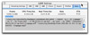
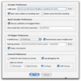

About LameBrain
LameBrain is a LAME front-end for OS X. It consists of three primary tools:- Single File EncoderThe Single File Encoder handles "one-at-a-time" encoding. It is useful for situations where you need precise control over the encoding settings.
- Batch EncoderThe Batch Encoder processes multiple files. You can drag and drop files or folders on the Batch Encoder to add them to the queue. Each entry in the queue can be assigned a separate encoding profile.
- CD RipperThe CD Ripper automates the process of encoding files off of CDs and assigning proper ID3 tag information. It has integrated FreeDB support for downloading CD information.
- LAME's homepage is http://www.mp3dev.org
- id3ed's homepage is http://www.dakotacom.net/~donut/programs/id3ed.html
- Control Bar icons by Ken Holewczynski
- Original Skeletor icon by Matt Harrington
- Uses DrawControl, IconUtil, and MacXLib's plugins by Mac-X-Software
- CFPlugin by TildeSoft. Thanks to Kevin Ballard for the examples.
- CarbonDeclares module maintained by TildeSoft
- RealEasyPrefs Module by RealCode
- MBS Plugin by Monkeybread Software
- MP3Info Class by Christian Schmitz
- Volume Manager plugin by Dr. Riccardo Favilla
- If you previous installed a preview version of 0.6.0, you should delete your preferences file BEFORE running 0.6.0 final. It should be <your home directory>:Library:Preferences:LameBrain 0.6 Prefs
- All main encoding windows (single file/batch/cd ripper) have been combined into a single window. Stats have been moved to the LAME settings window under the Stats tab. Size of LAME settings window has been reduced. Appropriate changes have been made to the Preferences window
- ID3v1.1 tag viewing and editing is enabled using id3ed
- FreeDB server preference can now be selected from a dropdown menu. You can add or remove servers by editing the data/freedb_mirrors.txt file
- LAME executable has been moved to bin/ subdirectory
- Profiles have been moved into "Profiles" subdirectory. You will need to move your custom profiles into this folder for them to be usable
- Extended ASCII chars are now converted to "_" in output filenames
- Added debug logging functionality. Debug info is logged to file in "logs/" subdir, and can be turned on or off in Preferences. Logging can slow LB down and the file can get quite large, so this should only be used if you're having problems
- Added ability to view TOC.plist file of currently selected CD. Useful for debugging purposes
- New, fancier About window. Woo!
- Eject button removed since preview versions; will reappear soon
- Experimental: LameBrain will try to copy the ID3 tags from an input mp3 file to the re-encoded version
- Fancy new icons for the control bar by Ken Holewczynski
- Clip player will now show artist and title if ID3 info is present
- Fixed bug where LameBrain would crash if it found a mounted DVD
- Fixed bugs with double-quotes in ID3 tags when CD ripping
- Fixed bug where Year info was not retrieved from FreeDB
- fixed issue where colons in CD info tags were causing Nil Object Exceptions when the .m3u file was written
){kind=link}
){kind=link}
- Encoding profileThis menu lists the currently available profiles. When a file is added to the queue, the currently selected profile in this menu will be assigned to it. Profiles are created in the Lame Settings window's Profiles tab.
- Target directoryThis indicates where encoded files will be placed. You can change this location by clicking on the button.
- Delete SelectedClicking this button will delete all selected entries in the queue.
- Delete AllClicking this button will delete everything in the queue.
){kind=link}
- CD DriveThis menu contains a list of all mounted Audio CDs. In theory it should support multiple CD drives, but I haven't actually had a chance to test this.
- ArtistThe artist associated with this CD.
- TitleThe title of this CD.
- GenreThe FreeDB genre in which this CD is classified.
- YearThe year this CD was released.
- Track ListThe CD Ripper Track List contains the following columns:
- Checkbox
If the checkbox is checked, this track will be encoded. - #
The number of this track. - File name
The OS-assigned file name on the audio CD. This is not the output filename. - Title
The title of this track. - Time
The length of this track in mm:ss.
- Checkbox
- Target DirectoryThe base directory for encoded tracks. The naming scheme path will be appended to this directory. You can change this location by clicking on the button.
- Query FreeDB ServerThis initiates a query to the FreeDB server.
- Refresh CD InfoThis forces the CD Ripper to re-scan the mounted drives for audio CDs. You must do this whenever a CD is ejected or inserted while the CD Ripper window is open -- LameBrain can't detect these actions automatically.
){kind=link}
- Encoding SettingsPresets:
These presets are built-into LAME. Using any one of these will override any other settings.- Presets
This is a set of presets using ABR encoding.- phone => 16kbps/mono
- voice => 56kbps/mono
- fm/tape => 112kbps
- hifi => 160kbps
- cd => 192kbps
- studio => 256kbps
- Alt-presets
These are newer, high-quality presets.- Standard: This preset should generally be transparent to most people on most music and is already quite high in quality. Uses VBR.
- Extreme: If you have extremely good hearing and similar equipment, this preset will generally provide slightly higher quality than the "standard" mode. Uses VBR.
- Insane: CBR 320kbps; highest quality possible from presets. This preset will usually be overkill for most people and most situations, but if you must have the absolute highest quality with no regard to filesize, this is the way to go.
- r3mix
Uses r3mix VBR preset. See www.r3mix.net for more details.
- Constant Bitrate (CBR)
This is the default encoding mode, and also the most basic. In this mode, the bitrate will be the same for the whole file. It means that each part of your mp3 file will be using the same number of bits. The musical passage beeing a difficult one to encode or an easy one, the encoder will use the same bitrate, so the quality of your mp3 is variable. Complex parts will be of a lower quality than the easiest ones. The main advantage is that the final files size won't change and can be accurately predicted. - Average Bitrate (ABR)
In this mode, you choose the encoder will maintain an average bitrate while using higher bitrates for the parts of your music that need more bits. The result will be of higher quality than CBR encoding but the average file size will remain predictible, so this mode is highly recommended over CBR. This encoding mode is similar to what is reffered as vbr in AAC or Liquid Audio (2 other compression technologies). - Variable bitrate (VBR)
In this mode, you choose the desired quality on a scale from 9 (lowest quality/biggest distortion) to 0 (highest quality/lowest distortion). Then encoder tries to maintain the given quality in the whole file by choosing the optimal number of bits to spend for each part of your music. The main advantage is that you are able to specify the quality level that you want to reach, but the inconvenient is that the final file size is totally unpredictible.
- Presets
Mode:
Joint-stereo is the default mode for stereo files with VBR when -V is more than 4 or fixed bitrates of 160kbs or less. At higher fixed bitrates or higher VBR settings, the default is stereo.
- Stereo
In this mode, the encoder makes no use of potentially existing correlations between the two input channels. It can, however, negotiate the bit demand between both channel, i.e. give one channel more bits if the other contains silence or needs less bits because of a lower complexity.- Joint
In this mode, the encoder will make use of a correlation between both channels. The signal will be matrixed into a sum ("mid"), computed by L+R, and difference ("side") signal, computed by L-R, and more bits are allocated to the mid channel. This will effectively increase the bandwidth if the signal does not have too much stereo separation, thus giving a significant gain in encoding quality.
Using mid/side stereo inappropriately can result in audible compression artifacts. To much switching between mid/side and regular stereo can also sound bad. To determine when to switch to mid/side stereo, LAME uses a much more sophisticated algorithm than that described in the ISO documentation, and thus is safe to use in joint stereo mode.- Forced
This mode will force MS joint stereo on all frames. It is slightly faster than joint stereo, but it should be used only if you are sure that every frame of the input file has very little stereo sep- aration.- Dual
In this mode, the 2 channels will be totally inden- pendently encoded. Each channel will have exactly half of the bitrate. This mode is designed for applications like dual languages encoding (for example: English in one channel and French in the other). Using this encoding mode for regular stereo files will result in a lower quality encoding.- Mono
The input will be encoded as a mono signal. If it was a stereo signal, it will be downsampled to mono. The downmix is calculated as the sum of the left and right channel, attenuated by 6 dB.
- VBRMinimum Bitrate
Specifies the minimum bitrate to be used. However, in order to avoid wasted space, the smallest frame size available will be used during silences.
Maximum Bitrate
Specifies the maximum allowed bitrate.
VBR Routine- Old:Invokes the oldest, most tested VBR algorithm. It produces very good quality files, though is not very fast. This has, up through v3.89, been considered the "workhorse" VBR algorithm.
- New: Invokes the newest VBR algorithm. During the development of version 3.90, considerable tuning was done on this algorithm, and it is now considered to be on par with the original --vbr-old. It has the added advantage of being very fast (over twice as fast as --vbr-old).
Enable VBR (Variable BitRate) and specifies the value of VBR quality (default = 4). 0 = highest quality.
Strictly enforce minimum bitrate
This is mainly for use with hardware players that do not support low bitrate mp3.
Without this option, the minimum bitrate will be ignored for passages of analog silence, i.e. when the music level is below the absolute threshold of human hearing (ATH).
Disable writing LAME tag
Disable writing of the INFO Tag on encoding. This tag in embedded in frame 0 of the MP3 file. It includes some information about the encoding options of the file, and in VBR it lets VBR aware players correctly seek and compute playing times of VBR files. - ABRAverage Bitrate
Turns on encoding with a targeted average bitrate of n kbits, allowing to use frames of different
sizes. The allowed range of 8 - 310, you can use any integer value within that range. - CBRBitrate
Default is 128 - FiltersDisable Filters
Tells the encoder to use full bandwidth and to disable all filters. By default, the encoder uses some highpass filtering at low bitrates, in order to keep a good quality by giving more bits to more important frequencies. Increasing the bandwidth from the default setting might produce ringing artifacts at low bitrates. Use with care! - You can enter LAME command-line parmeters here to access features not currently in the GUI. If you use this feature, all other settings are ignored.
-
Profiles are basically user-made presets. They let you save your current encoder settings for later use. Profiles are stored as text files in LameBrain's folder.
Load a profile
Choose a profile from the popup menu and click the Load Profile button to load that profile's settings.
Save current settings as a profile
Enter a profile name and click the Save Profile button to save the current encoding settings to a profile. -  The Stats Window displays information about an ongoing encoding process. It also maintains a log of LAME and curl commands and responses.
){kind=link}
Various program behaviors can be changed here. Changes made are only saved if the [Save] button is clicked. 
){kind=link}
- Encoder PreferencesLAME path
This is the UNIX path to the location of the LAME binary. The default is the path where LameBrain resides. Hitting the button will revert the path to the default. Open stats window on encoding start
If this is checked, the Stats Window will open whenever encoding starts. Delete source file after encoding
If this is checked, the source file will be deleted when encoding finishes successfully. This only applies to the Single File and Batch Encoders - Batch Encoder PreferencesRecurse subfolders of dragged folders
If this is checked, the Batch Encoder will explore the subfolders of any folders dragged onto the window. Only accept files with these extensions
Only files with extensions that match those in this box can be added to the queue. Extensions should be separated with semicolons (;), and should not contain the period separator (.). For example:
wav;mp3;aiff
If this field is left blank, any file can be placed in the queue, including hidden files contained in dragged folders (like .DStore) - CD Ripper PreferencesFreeDB Server
This determines the server that will handle FreeDB queries. The default is freedb.freedb.org, which chooses a server randomly. If you want to try other servers, check the FreeDB.org site for a list of mirrors. Automatically query FreeDB server
If this is checked, the CD Ripper will automatically query the FreeDB server on startup if a CD is present. Naming scheme
This allows you to customize the way the CD Ripper stores and names files. You can construct a path and name for your files using the following macros:- %cdartist% - The artist for this CD
- %cdtitle% - The title of this CD
- %cdyear% - The year the CD was released
- %tracktitle% - The title of the current track
- %tracknum% - The number of the current track (ex. "1", "2")
- %tracknumpad% - The number of the current track with a leading zero if necessary (ex. "01", "02")
%cdartist%:%cdtitle%:%tracknumpad% - %tracktitle%
the first track would be ripped to:
CD Ripper Target Directory:Ministry:The Land of Rape and Honey:01 - Stigmata.mp3 Create .m3u playlist
If this is checked, LameBrain will generate a .m3u playlist file and put it in the same directory as the encoded files after encoding is complete. This type of playlist is primarily useful for Winamp on Windows and portable mp3 players. - General PreferencesCheck for new version on startup
If this is checked, LameBrain will download a text file from the funkatron.com web server that contains information about the latest version of LameBrain. If the version you have is older, a window will be displayed containing information about the new version, and you'll have an opportunity to download the new version. No personal information is passed on to the server.
Open these windows on startup
Check which windows you want to open when LameBrain starts.
What version of LAME comes with LameBrain?
LAME comes with a binary of LAME version 3.95.1 with the following compiler optimizations:
Why is LAME so slow on the Mac? How can I make it faster?
LAME currently doesn't take advantage of the Altivec extensions in G4 and G5 processors. A lot of work has been put into taking advantage of similar extensions on Intel and AMD CPUs, though, so LAME ususally runs a lot faster on these processors. If and when LAME developers put some time into optimizing for Altivec, though, the PPCs should be very competitive. To contact the developers, post on the mp3encoder mailing list or mail them directly.Why can't I encode anything with LameBrain under OS X 10.1.x?
The version of LAME that comes with LameBrain appears to only work under 10.2.x. You can download a version of LAME that works with 10.1.x from http://www.culater.net/osd/packages.html. Then change the LAME path in the preferences to point to the version that package installs. It should be /usr/local/bin/lame.How do I make a bug report/feature request?
The best way is to subscribe to the LameBrain discussion list by sending a blank email to lamebrain-discuss-subscribe@funkatron.com. There you can talk with other LameBrain users and the developer about anything related to the program. Otherwise, email lamebrain@funkatron.com with your report/request.